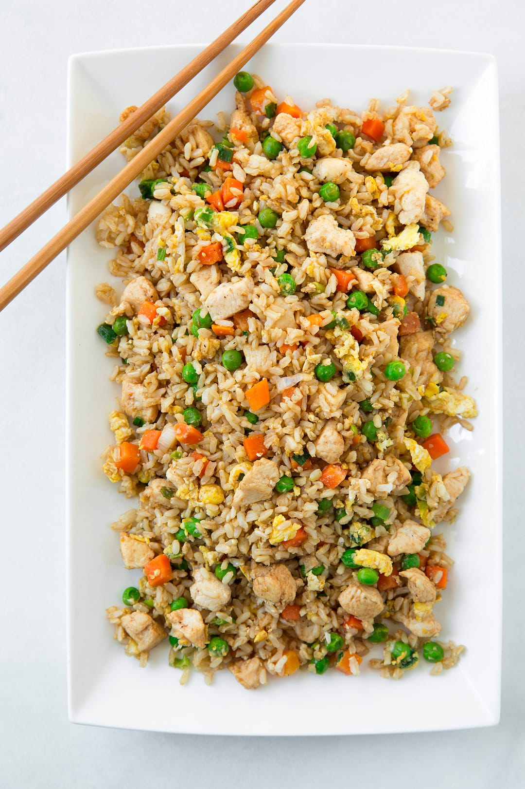

Chicken Fried Rice

Description
This recipe is a great go-to meal to make for dinner! It's quick, calls for basic ingredients, and full of flavor.
It will surely leave you and your family going back for seconds!
Ingredients
- 2.5 - 3 cups long grain rice (cooked and chilled the day before for best results)
- 1.5 - 2 lbs chicken breast (boneless/skinless thighs work as well)
- 3 large eggs, lightly scrambled
- 3 tbsp butter
- 2 cups mixed frozen veggies (Corn, peas, and carrots)
- 1 small white onion, chopped or diced (optional)
- 1 tbsp minced garlic
- 5 green onions
- 2 tsp sesame oil
- 1 tbsp oyster sauce
- 1/4 cup soy sauce (add more if needed to taste)
- Salt and pepper to taste
Steps
- If necessary, trim fat from chicken breast/thighs
- Dice chicken into desired size
- Bring medium sized pan to medium-high temp with a drizzle of oil
- Place chicken bites into pan and lightly season with salt/pepper
- Once chicken has color and is halfway cooked through, add splash of soy sauce
- When chicken is done cooking, transfer to a bowl/plate lined with paper-towel
- Dice green onion and place into small bowl
- Whisk eggs in small bowl and set to side
- Take pan and heat to medium temp, putting one tbsp of butter small amount of oil into pan
- When butter melts, pour whisked eggs into pan
- Scramble egg once bubbles start to form on surface of eggs, transfer to plate once finsihed cooking
- Wipe pan clean, drizzle with oil, and add 2 tbsp of butter over medium-high heat
- Add frozen veggies to pan, stirring occasionally
- When veggies begin to soften, add minced garlic and continue to stir to prevent burning
- Add 3/4 of green onion to pan, continuing to stir until fragrant
- Add scrambled egg back into pan, stirring and cooking for approx. 1 minute
- Add chicken bites, sesame oil, and rice to pan
- Stir oyster sauce and soy sauce into pan
- Once all ingredients combined, remove from heat and enjoy!